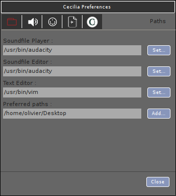
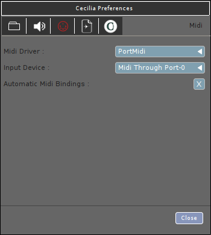
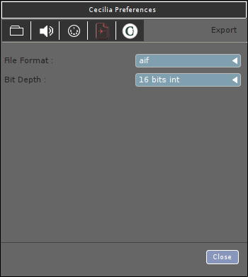

Setting Up the Environment¶
Preferences panel¶
The Preferences panel (accessible with the shortcut “Ctrl+,” or in the File menu (Cecilia5 menu under OSX)) allows the user to configure the application’s behaviour for a specific operating system. The window is separated into five sections.
Path¶
In the Path tab, the user can choose a sound file player (or audio sequencer - see “Soundfile Player”), a sound file editor (see “Soundfile editor”) and a text editor (see “Text Editor”) to be used with Cecilia5. To choose an application, enter the path of the application in the appropriate space or click on “set” button. A dialog window will then appear for choosing the application.
The user can also enter a path (or multiple path separated by semicolon (;)) in the “Preferred paths” box to save custom modules (.c5 files) in specific folders. Cecilia5 will then scan these folders and add new categories/modules in the Files -> Modules menu.
{kind=link}
Audio¶
The Speaker tab offers different options related to the audio parameters of Cecilia5. The user can choose an audio driver (see “Audio Driver”) and the input and output devices (see “Input Device” and “Output Device”). The check box in front of the input device menu must be checked in order to get live input signal in Cecilia5.
The popup menus “Sample Precision” and “Buffer Size” contains different values to set the sample precision in bits (32 or 64) and the buffer size in samples (64, 128, 256, 512, 1024 or 2048). The user can also choose the default number of audio channels (up to 36 - see “Default # of channels”) and the sample rate (22 050, 44 100, 48 000, 88 200 or 96 000 Hertz - see “Sample Rate”).
The last two popups allows the user to give an offset to the soundcard input and output channels. In stereo mode, with “First Physical Output” set to 8, the signal will be sent to outputs 8 and 9 (beginning at 0).

MIDI¶
In the MIDI tab, the user can choose a MIDI driver (PortMidi is the only available driver at this time) and a MIDI controller for input (see “Input Device”)
Warning, the MIDI controller should be already connected and detected by the computer to be detected by Cecilia5.
If the “Automatic Midi Bindings” box is checked, the controller 7 of the selected MIDI device will automatically be assigned to the Gain slider (in the “In/Out” section of the control panel) and the MIDI keyboard will be binded to the sampler’s transposition slider.
{kind=link}
Export¶
In the Export tab, the user can set the default file format (WAV, AIFF, FLAC, OGG, SD2, AU, CAF) and the bit depth (16, 24 or 32 bits integer, or 32 bits float) of the output sound files that will be exported to hard drive.
{kind=link}
Cecilia¶
The Cecilia5 tab provides different settings:
The default duration (10, 30, 60, 120, 300, 600, 1200, 2400 or 3600 seconds - see “Total time default (sec)” of the output sound file and its default fadein/fadeout duration (0, 0.001, 0.002, 0.003, 0.004, 0.005, 0.01, 0.015, 0.02, 0.025, 0.03, 0.05, 0.075, 0.1, 0.2, 0.3, 0.4 or 0.5 seconds - see “Global fadein/fadeout (sec)”).
Check the “Use tooltips” box to see the tooltip information windows appear in the graphical interface when the mouse is over a particular widget.
Check the “Use grapher texture” to obtain a textured background on the graph.
Check the “Verbose” box to obtain more information when you work with Cecilia5 from the terminal, which can be useful for debugging.